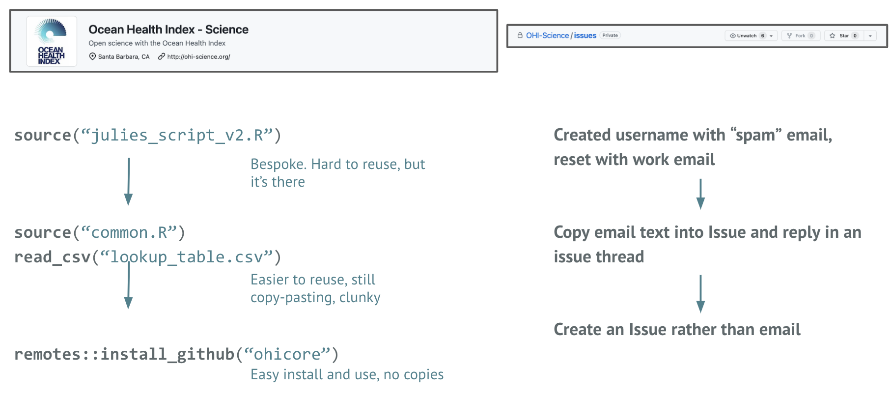

Better science in less time
Better science is less time is science that is more efficient, reproducible, open, inclusive, and kind. There are growing examples of better science in less time in environmental and Earth science, and beyond, including Our path to better science in less time using open data science tools (Lowndes et al. 2017).
Slides that have been presented during Champions Program Cohort Calls:
Here we also introduce the Pathways concept that teams will develop throughout the Champions program. The Pathway is based on Table 1 in Lowndes et al. 2017, and helps teams deliberately identify data workflow practices and next steps to facilitate efficiency and open culture in terms of reproduciblity, collaboration, communication, and culture.
Pathways to better science in less time
Figure 1 of Lowndes et al. 2017 shows that open data science tools increased the ease of reproducibility and the ease of collaboration for the Ocean Health Index (OHI) team. But it was not the tools alone - it was the process the team co-created and prioritized.
Create space
The OHI team created space for synchronous collaboration: convenings to learn and teach each other together.
A critical first part of this was prioritizing time (which included getting buy-in, lobbying, showcasing). Then, this meant that the team could focus time on:
- Getting comfortable talking about data/workflows
- Building trust (to share imperfect work)
- Recognizing that what we invest incrementally will have large dividends in the future
The OHI team started having “Seaside Chats”: 1x/week where they discussed filenaming, code review, standard operating procedures and documentation, and much more.
Create place
Creating place is critical for asynchronous collaboration. This includes GitHub Organizations, Repositories, Issues; Google Drive Folders, Docs, Spreadsheets, and Slides; Slack Organizations and Channels; JupyterHubs, etc.
It is a place for code, shared practices, resources, conversations. Critically, this involves making sure that everyone on the team is comfortable contributing through these channels. This means both with the technology, and the culture of the team.
Find the common
Through creating space and place, teams will find the common workflows, tools, skills that they already have and need to do their work.
For the OHI team, we asked how to make sure everyone can participate as they need to? We introduced new software sparingly, and helped each other learn. This included initial setup as well as follow up and practice. We leveraged existing habits & resources - within and beyond our team. Open communities were a big part of this learning. Through this we were able to distinguish data preparation (tidying) as distinct from our science, and make this actionable by shifting to smaller modular code to combine for different reports/audiences.
Documentation was a key part of this. And, writing documentation “for nobody” is very hard, and it’s a huge task. We prioritized documentation based on Onboarding and Offboarding: for our future selves first, and then future us.
What was it really like? Transition to GitHub
Changing behavior/habits takes time, and is messy. Here is part of the story:

Ocean Health Index: behind the scenes
Some key points to discuss from Lowndes et al. 2017, Nature Ecology & Evolution: Our path to better science in less time using open data science tools:
- Reproducibility & communication enabled by open tooling
- Shared practices are useful beyond shared projects
If you’re interested in more overview of the OHI setup, see this 2017 talk (25 mins): OHI Better science in less time
OHI pathway
- Motivated by necessity
- Reimagined by possibility and community
- Done incrementally!
- Yes: it’s an investment.
- Also yes: huge, enduring payoff for (your) science
Reproducibility & communication enabled by open tooling
RMarkdown to reimagine data analysis and communication. RMarkdown combines analyses & figures together, rendered to your reporting output of choice.
An example: http://ohi-science.org/betterscienceinlesstime/
- Website built with R/RMarkdown & Github
- You can get started too: (1-hour tutorial)
Examples: environmental science
Here are a few examples to showcase what is possible and being done by the community.
- Regime Shifts in R & Data Science within the BC Public Service Observations from the field - Stephanie Hazlitt, Government of British Columbia, slides from CascadiaRconf keynote
- NMFSReports: Easily write NOAA reports and tech memos in R Markdown! - Emily Markowitz, NOAA Alaska Fisheries Science Center, slides from CascadiaRconf talk
- Automated reporting in Tampa Bay with open science - Marcus Beck, Tampa Bay Estuary Program, Openscapes blog
- TBEP’s Data Management Workflow and open science cake
- Regime Shifts in R & Data Science within the BC Public Service - Steph Hazlitt CascadiaR keynote (tweet)
Further resources
Not so standard deviation podcast
Parker & Peng
http://nssdeviations.com
Great discussions about data concepts and “in the wild”
Episode 9: Spreadsheet drama
Practical computing for biologists
Haddock & Dunn
http://practicalcomputing.org/
Software & computing concepts already on your computer
Chapter 2: Regular expressions